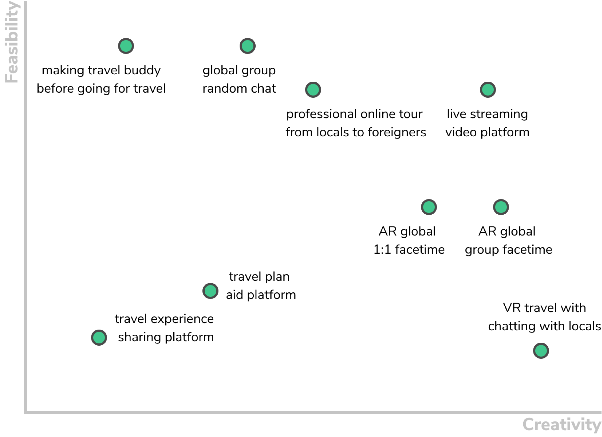

UX Design
UX Research
Virtual Travel Livestreaming Radio, Nomad
Redefine Traveling as a Virtual Experience for the Youth Suffering from Corona-Blue Depression
Roles and Responsibilities
Researcher: end-to-end user research of survey, interviews, affinity mapping, and user-testing
Designer: sketched, wire-framed, and high-fidelity prototyped the UX/UI
Tools Used
Figma
ProtoPie
Illustrator
LucidChart
01. Project Overview
Problem
A heightened desire of "travelling" and see more of the world and feel connectedness with others during the Pandemic.
Goal
Travel and Connect Virtually through Livestreaming Videos [or Visible Radios], Easily Taken by Neighbours across the World
02. Context
After the Pandemic struck...
“ I have been virtually traveling with Tinder Passport. ”
“ I use SnapChat Map for my travel. ”
95% looked for travel inspiration and 53% heightened their desire to explore even more of the world.
* source: virtual travel Youtube viewer’s comments & Booking.com
“ Youth depression doubled during the Pandemic. ”
“ Young adults hardest hit by loneliness during Pandemic. ”
* source: CNN and Harvard Research
that allowed them searching locations and exploring regions through in-app “map.”
03. Generative Research
Initial Survey
69 survey participants
Although many people enjoy watching travel videos from YouTube or SnapChat and instagram videos and share travel videos to close people, their fear for invasion of privacy (64%) and difficulty of publicly creating travel content (67%) is deterring them from sharing content publicly. meanwhile, most of them were willing to introduce their cities and countries to others.


Competitive Analysis
Based on the initial survey, I’ve selected the five video platforms related to online travel or could be used for such purposes.
Semi-Structured Interviews
Based on competitive analysis, I had interviews with five people who use the competitors’ products.
Key Similarities
Lockdown made them miss "travel" for the connectedness with people, not to mention the desire for new sightseeing besides their rooms.
Key Frustrations
Unpredictable Video Content (e.g., selfies or workout videos) randomly popping out when watching videos from the existing social media apps.
Fear for Invasion of Privacy and Unwanted Communication with “strangers” when using social media.
Predictability
Predictability of a function in UX is all about knowing in advance or feeling the upcoming event. Encountering unexpected and unenjoyable content can make the experience stressful and burdensome.
When it comes to social media products, uploading personal content often results in the users being exposed to unwanted attention and contact unless the product company carefully deals with it.
04. Synthesis
Jasmine
20 yr-old freshman living in Toronto who is outgoing, vehement, inquisitive, friendly and frequently uses SnapChat, Instagram, Tinder
Jasmine graduated high school during the pandemic and is spending her freshman year without meeting any new friends. She could not plan to travel abroad with her friends, so she was depressed for months. Her habit of swiping people's snaps in SnapChat or others' selfies in a dating app and superficial talks with them doesn't seem to help her escaping from loneliness and depression.
"I don't want to feel isolated anymore."
* excerpted from Interviewee E


Huan
24 yr-old graphic designer living in Singapore who is exploratory, imaginative, reserved, private and frequently uses Pinterest, YouTube, Drive and Listen
Huan loves to travel — at least until he encountered the turbulent Covid-19 era. He loves traveling while working. He also has a photograph Instagram account with 3k followers, where he posts photos taken while traveling. However, it is not an available option for now. He has been searching for ways to feel refreshed but hasn't found any.
"I am yearning for refreshment.”
* excerpted from Interviewee D
Journey Mapping
Jasmine’s Daily Life
Huan’s Daily Life
HOW MIGHT WE
Alleviate Depression and Disconnectedness
& Fulfill the Heightened Desire to “Travel”?
05. Ideation
Creativity vs. Feasibility Graph
Affinity Mapping
We cannot travel far from our hometown now, but we can
Secondhand Experience Others' Daily Lives through
"Visible Radio"
where creator connects with listeners while showing around local areas.
User Needs & Design Implications
User Needs
- Boredom from the lockdown
- Unpredictability of video content before clicking
- Fear to invasion of privacy
- Psychological Burden to create video content publicly
- Receival of unwanted direct messages (DMs)
Design Implications
- Gamification for amusement
- Predictable design system by sorting based on landscape
- Minimize personal info requirement
- Livestream without face reveal
- Minimize one-on-one communication